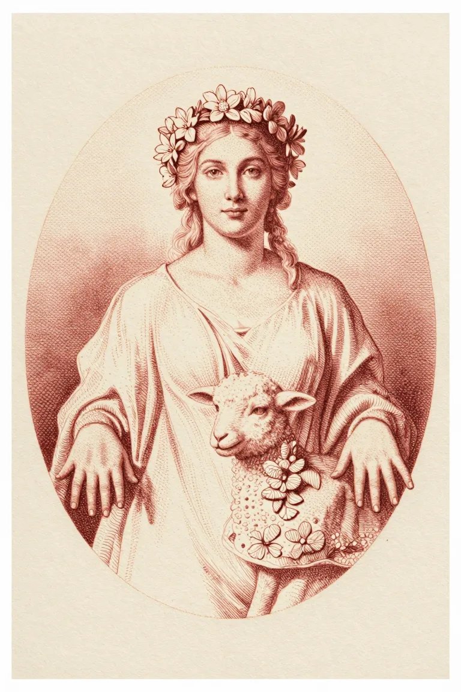

Пластину строят из вытравленных и награвированных точек и коротких мазков, так что в тоне нет штриховки. Оттиск показывает мягкую кожу и тело бледной точечной тушёвкой, а издатели часто печатали красно-коричневым (сангина).

Главная идея
Пластина из точек и коротких мазков без штриховки даёт телу и драпировке мягкий тон, подражающий рисунку мелом.
Принципы дизайна
Стройте каждый тон из вытравленных точек и коротких мазков; не рисуйте штриховку на фигуре.
Делайте точки мелкими и частыми в тенях, 80–120 на дюйм, и редкими в светах.
Печатайте красно-коричневой сангиной для вида рисунка мелом или тёплой чёрной для портрета.
Оставляйте край фигуры мягким и растворяйте его в бумаге, овалом или виньеткой.
Добавляйте лёгкий контур только там, где форме нужен твёрдый край, например у шляпы или рукава.